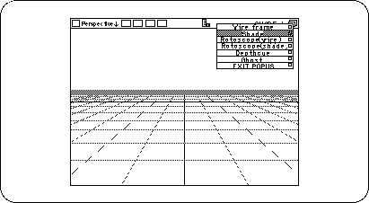
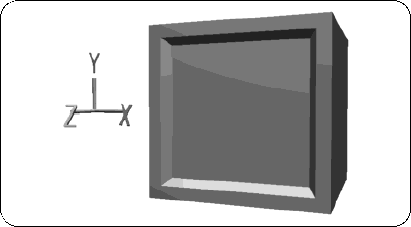

Return to previous page | Return to menu | Go to next page
Here, let's change the display method from “wire frame” to “shade” in order to understand the state of the object in an easy-to-understand manner.
Switch the display method of the “Perspective” window from Wire Frame to Shading (Figure 2-18).
(Click "SHADE ↓" in the upper right corner of the window with the left mouse button , and change "Wire" to "Shade".)

The object you are creating should now look like the picture (Figure 2-19).

In this way, you can check the state of the object by setting the display state to “Shade”, but it is better to perform normal modeling work with a wire frame.
Next, shrink this TV monitor a little (90% reduction).